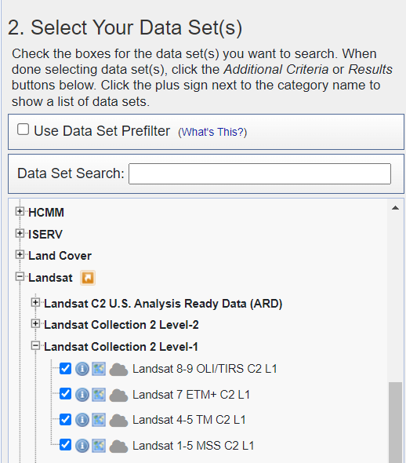
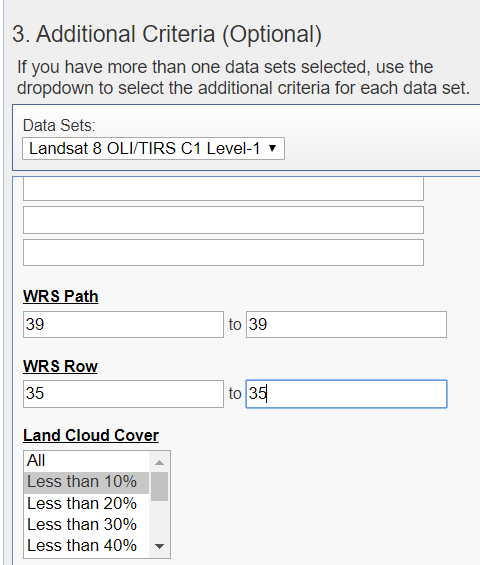
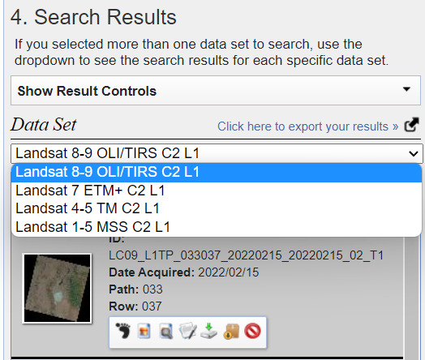
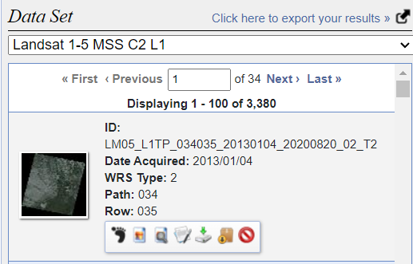
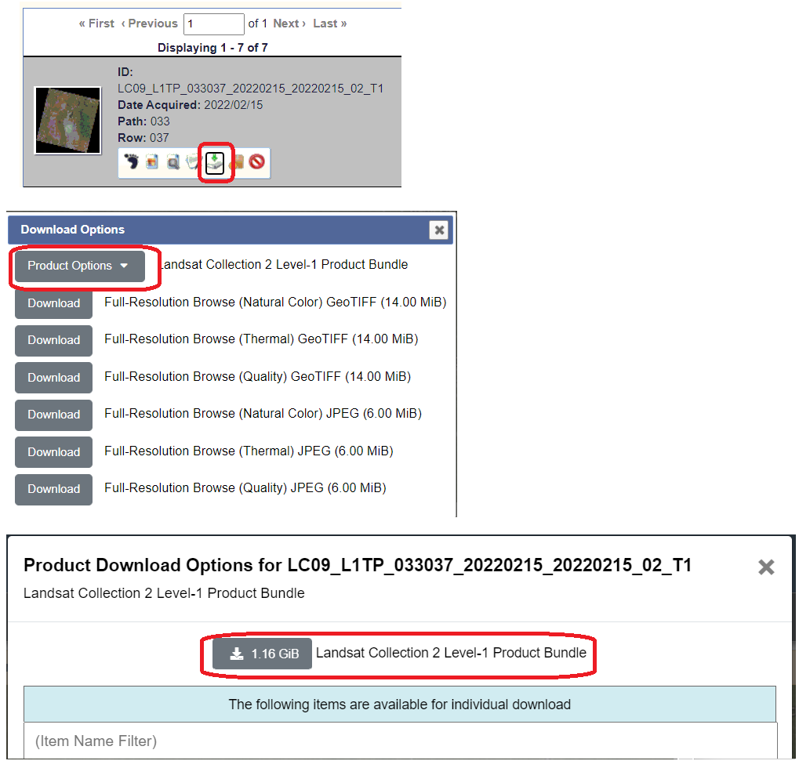

You can also select a date range, or search by month if you only want a seasonal event.
You can pick Maximal clould cover. In deserts you should easily be able to get very limited cloud cover, but in other areas you might not be able to be so picky.

Select the data sets
- Landsat-- Get Landsat Collection 2 Level-1. Avoid the other options.
- All four of the Landsat sensors should work, Landsat 1 to 9
Landsat 7 had problems at the end of its mission with voids on the edges of scenes (SLC or scan line converter problem); during much of that time Landsat 5 was still collecting data for the multispectral bands (it did not have the pan band)

Landsat Additional Criteria
- Get the Landsat path and row
- Once you know the path and row, set the filter on the additional criteria
- Set the filter on he additional criteria such as cloud cover. In the desert you can set the most restrictive area. In cloudy areas you may have to be less restrictive, but can check if your portion of the entire scene might be cloud free.
- If you look at the results without looking up the path and row, find a scene with the coverage you want, note its path and row, and return to set the path and row.


Pick the sensor you want from the drop down list.

Results will be displayed. Newest results will be at the top of
the first page, oldest at the bottom of the last page.
If you have a huge number of results, you should consider filtering the
results:
- Get picky with clouds. This is easy in the desert, harder in the jungle.
- Select only the months you want
- Insure you have just the correct path and row

Search results. Until you have some
experience, insure that the secnes cover the
area you want.
The
program often shows a number of different scenes
in terms of the coverage area, and they may not
overlap. This is particularly true for
the earliest Landsats.
The useful buttons to
the right of image thumbnail:
- Show footprint, to see what a tile shows.
- Second button from the left overlays the image on the selection map, and should clearly show clouds before you download.
- Show metadata and browse image
- Download
If you are just downloading a few files, use it from this page (you can have multiple downloads going at a time; that number might now be 2).
If you are downloading a lot, you can add to the Cart and then use one of the following options. This seems to be changing very rapidly
- MICRODEM download (which may have challenges with the local friendly IT department blocking the operation)
- uGet.
- BDA

Landsat Download options for a single scene:
- For detailed analysis, you need the Geotiff data product,
and the Product bundle.
- For Landsat 8 the scenes are about 1 GB compressed, and about 2 GB when uncompressed.
- For Landsat 7 the scenes are about 226 MB compressed.
- For Landsats 4 and 5 the scenes are about 163 MB compressed.
- For Landsats 1 to 5 MSS the scenes are about 30 MB compressed.
-
For quick analysis, the Full-Resolution Browse GeoTIFF images are significantly smaller
(~14 MB) and are georegistgered,
zipped.
- Insure you have installed GDAL as the images must be processed before use (automatic operation)
- These should be opened with the file option and not directory selectioni
- Do not get the Full-Resolution Browse JPEG images (they are dumb pictures with no registration).
- Download the individual band files with great caution
- Cannot easily get color composite images
- Open as a DEM/grid
- All downloads have standard Landsat naming conventions. Do not rename the files or folders, and the program uses the file names to manipulate the data
- Manage Landsat data